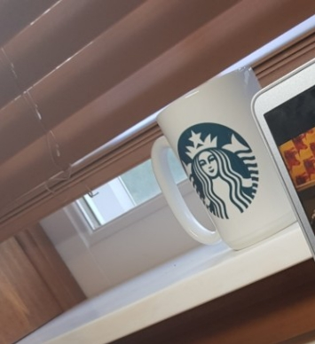
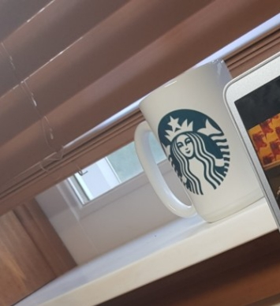

WEEK 3
I designed an original T-shirt and printed my design through "Brother GT-361 printer". I first designed using "Paint", saved file, and imported to "GTX Graphics Lab".
Then I used UV printer in order to subliminate on wood board. Suprisingly this displayed high resolution images. Lastly, I dye sublimated on mug. This project required accurate time management and temperature to print well

 
